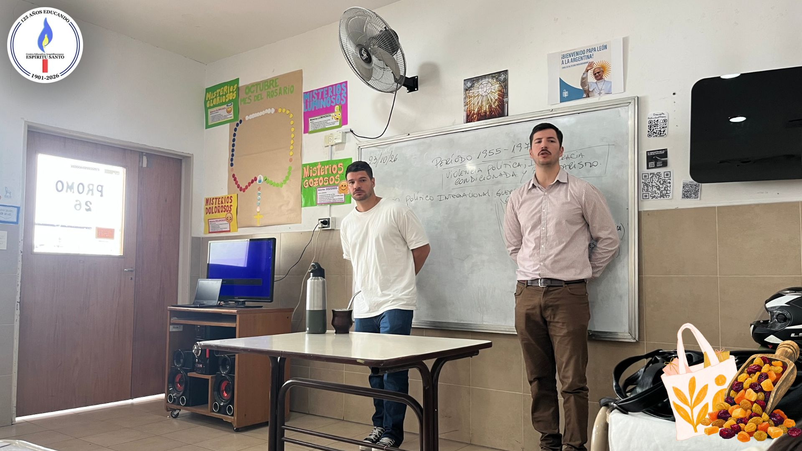

Charla con “ De Frutas Secas ”
Por: Maia Lopez Arrozpide y Jazmín Antúnez

Participaron los alumnos de 5.º B
El día 23 de Octubre, el emprendimiento de “ De Frutas Secas ” que es una empresa que opera en el mercado de productos saludables. Vinieron al colegio a tener una charla con los alumnos de 5to B, en donde contaban como empezaron hasta ahora. Contaron un poco de todo: que fue fundada en 2013 por un grupo de amigos y con el correr de los años ha pasado por distintas actividades de la cadena de distribución conociendo en detalle la operatoria del rubro.
En la actualidad trabaja en contacto directo con productores e importadores y distribuye y comercializa sus productos alrededor de todo el país pero no siempre fue asi. Tuvieron problemas que pensaban que no tiene solución, casi bajan los brazos y abandonan todo lo que habían logrado. Después dieron un espacio para hacer preguntas, ya que los alumnos de 5to año hicieron un pequeño emprendimiento y allí despejaron todas sus dudas.
Leer otras notas
Convivencia de los alumnos de 1º A y B
Convivencia de los alumnos de 3º A y B
Publicidad